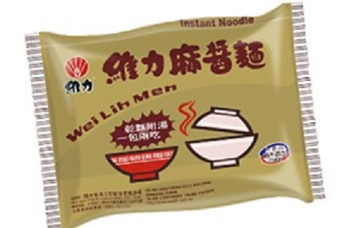
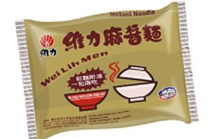

NO.1當然就我們的"維力炸醬麵"!!（ノ≧∀≦）ノ
不得不說維力就是好吃。
不得不說維力就是好吃。
NO.2"維力麻醬麵"這也是維力系列，所以就想說放一起好了
不過這也是真的還蠻好吃的，出乎我的意料呢! 
不過這也是真的還蠻好吃的，出乎我的意料呢! 
在上大學前，泡麵一直都是我個人很少吃到，但又很想吃的食品。
為甚麼會這樣說呢，原因都是因為之前都是住家裡，每次回到家中，晚餐都是有煮的，
而且都煮得很好吃，所以也就沒什麼機會能吃到了!
但是現在在上了大學後，就變得很常吃了，
雖然宿舍外有全家和學生餐廳，但因為中午人都很多，所以我通常都是午餐吃泡麵，
並且宿舍中我有一個專門放泡麵的抽屜呢! (≧▽≦)
所以現在我要來推薦我目前吃過覺得好吃的泡麵(#￣▽￣#) :